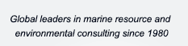

|
|
COMPANY SERVICES CLIENTS PROJECTS STAFF NEWS & EVENTS LIBRARY JOBS CONTACT HOME |
 |
| STAFF | ||
Active Staff (click name for more information) Steven E. Hughes Gregory T. Ruggerone Scott Goodman Kyle L. Antonelis Jeffrey A. June (retired) |
Kyle L. Antonelis Vice President Fishery Analyst Degrees & Diplomas BS.: Geology, 1998, Central Washington University, Ellensburg, WA MMA.: Marine Affairs, 2013, University of Washington, Seattle, WA Research Interests
Mr. Antonelis is NRC’s chief scientist and project manager for marine debris related research and operations. He is a recognized leader in the field of derelict fishing gear removal management, operations and research. He has managed operations for derelict fishing gear removal since 2008 and is proficient in developing programs and conducting research used to further understand the impacts of marine debris and derelict fishing gear, while also addressing the issue through innovative gear modification and prevention methods to reduce both the quantity of derelict fishing gear items, and their associated impacts in the marine environment. As a fishery analyst, Mr. Antonelis conducts a range of in depth quantitative and spatial analyses for resource assessment, management, and planning. He has extensive experience working as a research biologist in the field and he serves as field party chief for scientific research cruises in the Bering Sea. Prior to joining NRC, Mr. Antonelis was a geophysical operations manager for unexploded ordnance (UXO) projects in California and Hawai’i. Mr. Antonelis has worked with endangered and protected marine mammals in Alaska, California, Hawaii and Greece; and has worked as a deckhand on commercial fishing vessels in Alaska. DOWNLOAD COMPLETE CURRICULUM VITAE :: KYLE L. ANTONELIS (PDF file) |